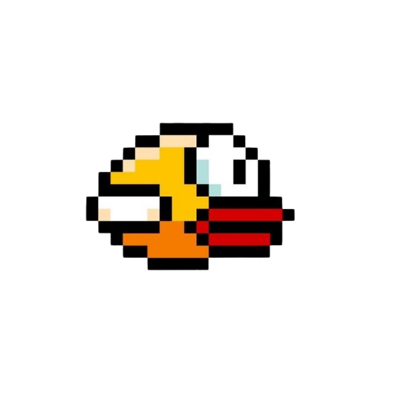

De quoi parlons-nous?
Flappy Bird c'est moi ! et je suis un jeu mobile.
Devenu emblématique pour avoir démontré qu’un concept
extrêmement simple pouvait captiver des millions de joueurs à travers le monde.
Mon ascension fulgurante, suivie d’une disparition soudaine,
fait de moi un cas d’école dans l’histoire du jeu vidéo et de la culture numérique !


Origines du jeu.
J'ai étais développé par le créateur vietnamien Dong Nguyen,
fondateur du studio GEARS Studios,
je faisais partie des nombreux petits jeux publier part mon créateur Nguyen !
Je suis sortie initialement en Mai 2013 sur IOS 6,
puis mis à jour pour IOS 7 en septembre 2013,
je serais finalement retirer des platformes de télèchargement google play,
et App store le 9 février 2014...

un succes inattendu.
À l’origine, Je passe totalement inaperçu !
Mais début 2014 j'explose en popularité, la raison?
Un gameplay ultra simple mais très frustrant,
le jeu procurer un effet “je peux faire mieux” incitant les joueurs,
à repartager massivement le jeu sur les reseau sociaux pour challenger le plus d'amies possible.
Résultat, des millions de téléchargements en quelques jours,
numéro 1 sur l'App store et google play, des revenues éstimer a plus de 50 000$ journalier !
Bon, avec l'aide des publicité in-game biensur, même si honnetement,
j'étais l'un des jeux qui en avait le moins !
Malheurteusement mon créateur Nguyen ne s'attendait pas a un tel succès...
Controverses et critiques.
Comme tout succès, la critiques arrive forcèment,
il fallait s'y attendre, on comparait mes graphismes à ceux de Super Mario Bros!
Pfff quel bande de forceurs...
J'ai eu des accusations de plagiat pour un histoire de tuyaux verts...
( Je ne vois vraiment pas de quoi ils parlent...).
Mais aussi beaucoup de débat sur l'addiction et la frustration du jeu.
- Addiction et frustration : pourquoi ça marche ?
- Difficulté injuste mais accessible.
- Frustration productive.
- design et son.
- Une fin brutal.
Le gameplay, la recette miracle.

Chaque partie dure quelques secondes. Cela crée une boucle rapide : tu essaye -> tu échoue -> tu recommence immédiatement. Ce mécanisme est proche des principes utilisés dans le conditionnement opérant et le renforcement intermittent
Le jeu donne l’impression d’être simple un seul boutton, le clic sur l'écran, mais la physique du jeu est extrêmement éxigantes, la moindre erreur est punitive, la marge d'erreur entre chaque clic est très faible elle aussi, la précision et le timing sont la clef, tout ce phénomène crée une tension cognitive.
Contrairement à d’autres jeux frustrants, Je ne punis pas longtemps, Je demande d'ailleurs pas d'engagement long (rappellons qu'une partie ce compte en seconde). C'est le même type de frustration que l'on peut avoir dans un Darksouls, difficulté élevée mais très gratifiante, DarkSoul est un exemple parmie tant d'autres, les jeux d'arcade classiques ont tous la petite touche de frustation (finalement sans l'ego de chacun, les jeux vidéo ne marcheraient probablement pas).
En ce qui concerne les design, c'est simpliste: un fond bleu avec des nuages, des tuyaux verts, placer verticalement, sortant du haut et du bas de l'écran avec juste l'espace nécessaire pour faire passer un oiseau! en termes de son, et là, on touche à un point qui ma particulièrement marqué. A chaque passe entre les deux tuyaux verticaux, ont gagnait une pièce, puis une deuxième puis une troisième ainsi de suite. Ces pièces n'avaient aucune utilité si ce n'était que de servir de repère aux joueurs pour savoir combien de tuyau ils avaient passés et ainsi établir leurs records. Comment décrire le son des pièces ? hmmm... je dirais DOPAMINE! c'est simple, 10 ans après ma dernière partie en 2014, j'ai encore ce son en mémoire, gravé à jamais. Pour faire simple a chaque "gling" d'un tuyau franchi, vous receviez une dose de dopamine qui augmentait avec chaque nouvelle pièce obtenue. Plus vous vous rapprochiez de votre record plus la dopamine était forte, plus la tension augmentait, plus le stress montait. Un mélange parfaitt qui ne pouvait faire de ce jeu qu'un succès.
Comme toutes les belles choses ont une fin, je n'ai pas échappé à la règle : le 10 février 2014
soit quasiment 1 an tout pile après ma sortie,
Dong Nguyen me retire des stores.
Les raisons évoquées sont légitimes de la part de mon créateur,
surcharge médiatique, et oui, quand on parle de votre création sur tous les réseaux du jour au lendemain,
on peut comprendre que Nguyen subissait une pression psychologique à laquelle il n'était pas préparé,
et qu'il ne la souhaitait certainement pas.
Il semblerait que la culpabilité liée à l'addiction des joueurs fû aussi évoquée,
ce qui est totalement contraire à ce que souhaite la quasi-totalité des développeurs(euses) dans le monde du jeu vidéo/ des réseaux sociaux.
Il faut croire que mon créateur était l'un des derniers développeurs à se soucier du bien-être de ses consommateurs(trices)...